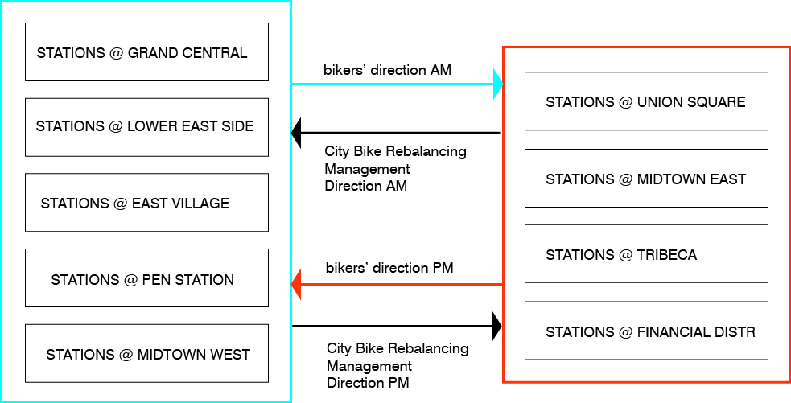

methodology_
The author doesn’t share how he obtained the data necessary to complete the project. We can assume it was
collected by City Bikes through their app and bikes. ArcGIS, Adobe Illustrator, and Processing have been used to
create computational diagrams.
rhetorical analysis_
The study shows how the level of imbalance varies across different Citi Bike stations and how it relates to rider
activity at different times of the day. It reveals not only commuting patterns but also other peaks in activity.
The results can help Citi Bike better accommodate riders' needs by ensuring that both bicycles and available docks
are consistently accessible.
other works by the author_
The City Bike Rebalancing study truly stands out in Juan Francisco Saldarriaga’s research portfolio. The project
“Targeted Harassment of Academics by Hindutva : A Twitter Analysis of the India-US Connection” is one of the few
that has a visual language equally complex to the City Bike study. The author works at the intersection of data,
visualization, urbanism, and the humanities. He specializes in mapping, advanced GIS, and data visualization.
Thus, the Citi Bike project aligns perfectly with his interests.
appraisal & criticism_
The project has striking visuals. It deals with large volumes of information presented in a variety of ways.
However, the audience not accustomed to such design language (City Bike riders, city officials, City Bike
management) might struggle to interpret the data. The naming and legends of matrices are confusing as they don’t
clearly show the difference between absolute values and percentages and what those percentages account for. I
would suggest creating a summary matrix with fewer stations that, similarly to maps, would show data by
neighbourhoods or hubs rather than all at once. Hotmaps and doughnut charts are the easiest to interpret, but
matrix with the above modifications showing hourly activity and balance would also be readable for general public.
